3 Linux programos
4 Programų instaliavimas
Programų instaliavimas Linux yra gana paprastas. Užtenka susirasti ir atsidaryti Software Manager.
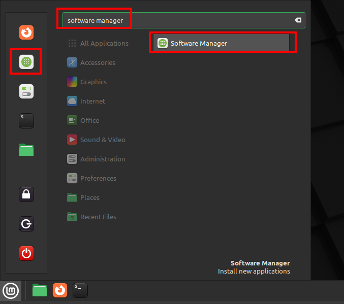
Jam atsidarius, iškart matome daug programų pasiūlymų. Drąsiai panaršyk šiame lange. Ar matai ką nors tave dominančio?

4.1 Sisteminių paketų instaliavimas
Sisteminis paketas (angl. System Package) - tai programa, kurią Linux kūrėjai patikrino ir pritaikė tavo kompiuterio veikimui. Šios programos valdomos per apt programą.
Kita programų instaliavimo sistema yra Flatpak, su ja susipažinsime vėliau.
Įdiekime “Bloboats” žaidimą.
Paieškos viršuje įrašyk Bloboats ir paspausk ant programos piktogramos.
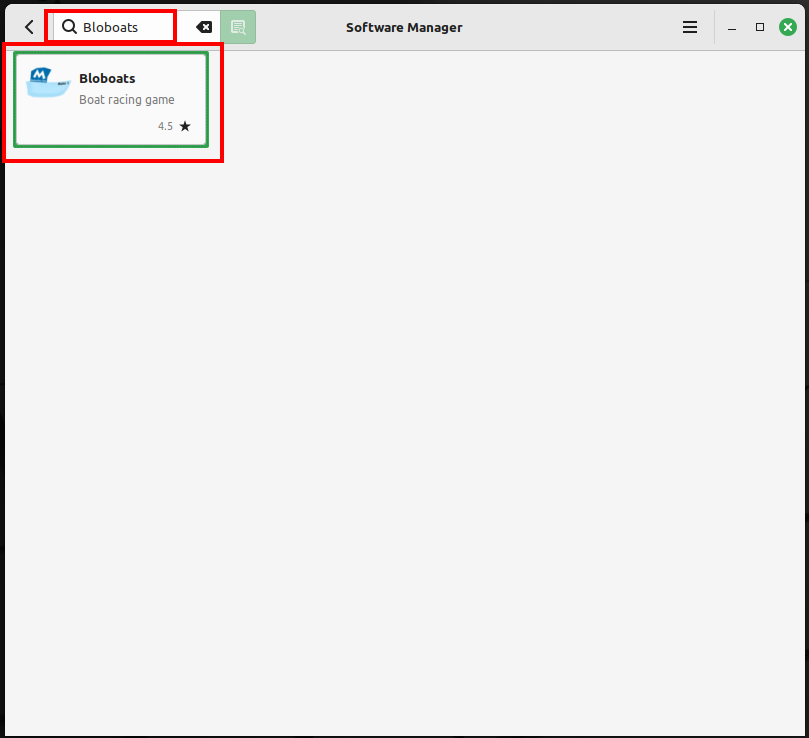
Kaip matai, sekantis langas parodo, jog tai System Package ir leidžia tau šią programą įdiegti. Spausk ant Install.
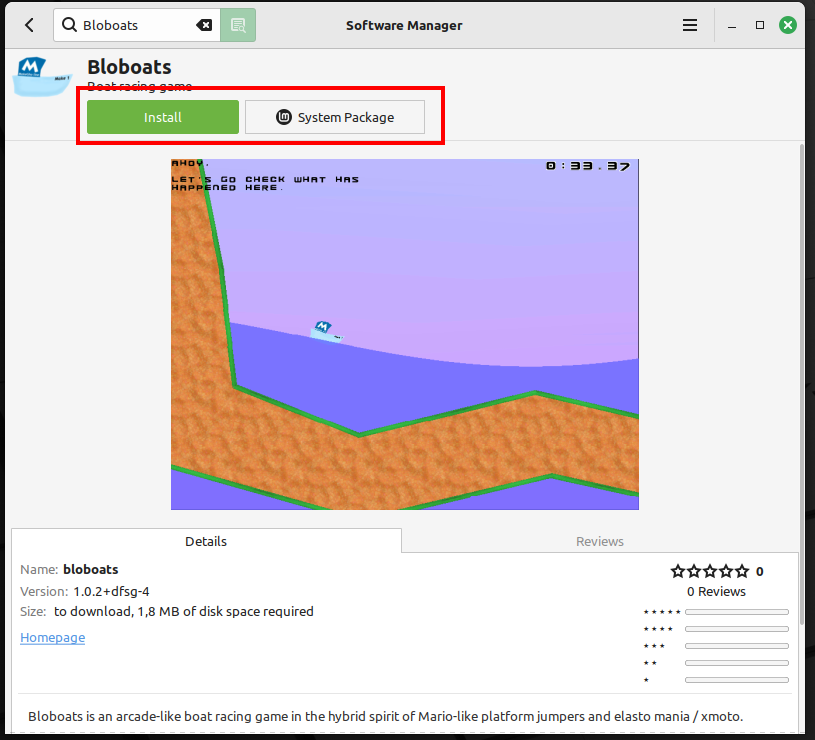
Software Manager programa informuos tave, jei reikia įdiegti papildomas programas.
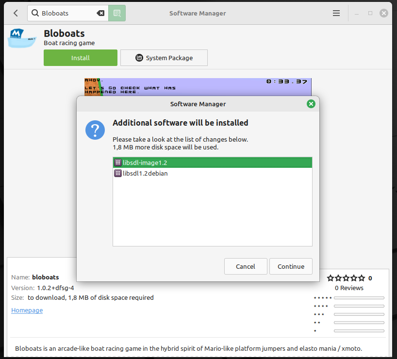
Jei taip nutiktų, spausk ant Continue, o tada įrašyk savo slaptažodį ir spausk ant Authenticate. Prisimeni, kai tu įrašai savo slaptažodį, kompiuteris komandas vykdo kaip sudo :)
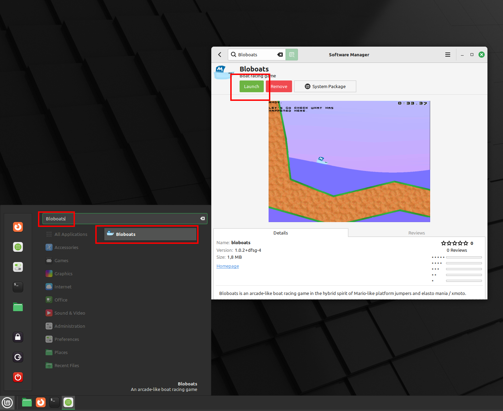
Dabar gali spausti ant Launch (lt - paleisti), arba rasi šią programą tarp visų programų.
4.2 Sisteminių paketų įdiegimas Terminal lange
Susiraskime kitą programą - 3dchess. Kaip matai, jos pavadinimas kompiuteriui yra parašytas šio lango apačioje:
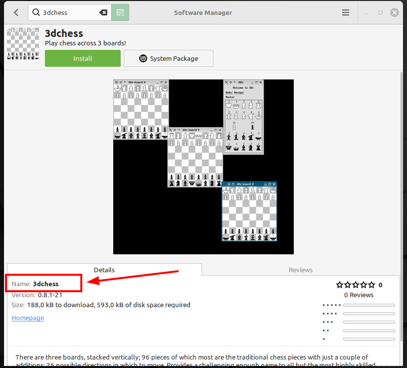
Atsidaryk terminalą ir įrašyk šią komandą, daug kas jau tau bus matyta:
sudo apt install 3dchessPaaiškinkime, kas čia yra kas:
sudo- pakelia tavo teises iki administratoriaus ir leidžia įdiegti programas.apt- programa, kuri įdiegia, atnaujina ir pašalina programas.install- komanda, pasakantiapt, ką turi daryti, šįkart įdiegti naują programą.3dchess- argumentas, pasakantis, kokią programą įdiegti.
Mes taip pat galėjome pridėti -y, bet šįkart to nepadarysime. Pažiūrėkime, kas nutinka. Ar pastebėjai kompiuterio reikalavimą patvirtinti, jog tikrai nori instaliuoti šią programą? Do you want to Continue [Y/n]
Kaip matai, kompiuteris manęs klausė, ar tikrai noriu, ir teko įrašyti Y raidę ir spustelėti Enter. Tiesa, kai matai [Y/n] tai reiškia, kad jeigu tiesiog paspausi Enter - kompiuteris galvos, kad tu renkiesi Y (Yes trumpinys), tad rašyti Yes tau net nereikia. Kartais tu gali pamatyti [N/y]. Taigi tas pasirinkimas, kuris parašytas didžiąja raide - bus automatiškai pasirinktas jeigu nieko neįrašysi, bet pasupausi Enter klavišą.
Jeigu būčiau įrašęs komandą
sudo apt install 3dchess -yTerminal programa manęs neprašytų patvirtinti mano pasirinkimo. Nes priejus šiam klausimui Do you want to Continue [Y/n], nustatymas -y pasakytų iškart Yes.
4.3 Flatpak
Flatpak yra kitoks būdas instaliuoti programas. Kai tu instaliuoji Flatpak programą, tu atsisiunti ne tik pačią programą, bet ir visas kitas programas, kurios reikalingos, kad pagrindinė programa veiktų. Pabandykime tai paaiškinti kitaip.
Įsivaizduok, kad tavo kompiuteris yra kaip namas. Namai turi kambarius, virtuvę, vonią ir t.t. Dabar įsivaizduok, kad nori naujos spintos. Kai tu parsisiunti spintą kaip System Package (sisteminį paketą), tai tarsi parsiveži ją iš IKEA parduotuvės ir pastatai savo kambaryje.
Flatpak programos veikia kitaip. Kai tu atsisiunti Flatpak programą, tai tarsi parsineštum visą didelę palapinę, kurioje yra ne tik tavo spinta, bet ir visa kita - virtuvė, vonia ir dar keli kambariai. Kodėl taip daroma?
Kartais programoms reikia kitų programų, kad jos veiktų gerai. Tavo kompiuteryje ne visada yra visos šios reikalingos programos. Todėl kai parsisiunti Flatpak programą, ji atsisiunčia viską, ko jai reikia, kad veiktų be problemų. Tai reiškia, kad gauni naujesnę ir geriau veikiančią programą. Tačiau ši didelė palapinė užima daugiau vietos tavo kompiuteryje, nes joje yra viskas, ko reikia programai.
Pavyzdžiui, susiraskime programą “hedgewars”. Pasirink bet kurią piktogramą.
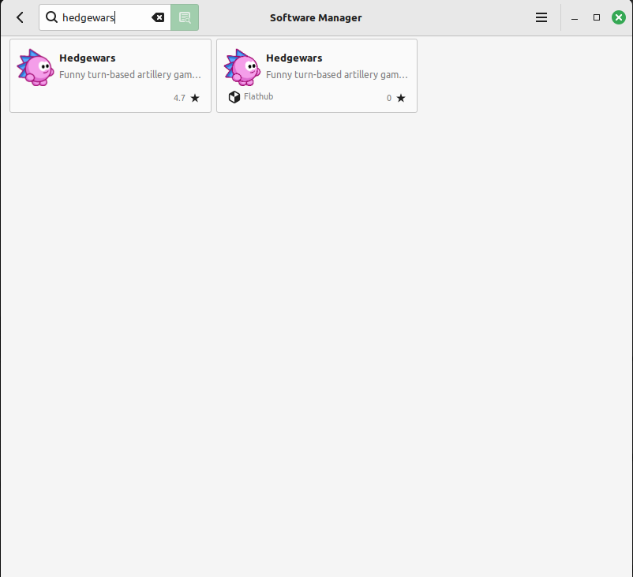
Kaip matai, šalia “System Package” arba “Flatpak” yra nedidelis trikampiukas. Paspaudus ant jo, pamatysi, jog gali įdiegti šią programą ir kitu formatu.
Taip atrodo System Package:
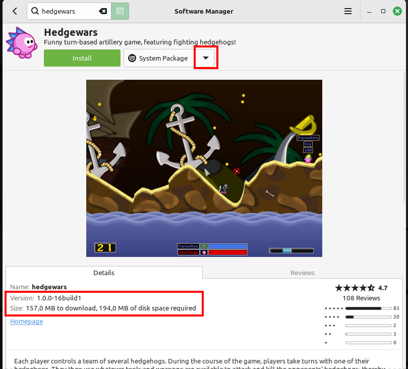
O štai taip Flatpak. Atkreipk dėmesį į programos versijos skirtumus ir kiek vietos reikia kompiuteryje.
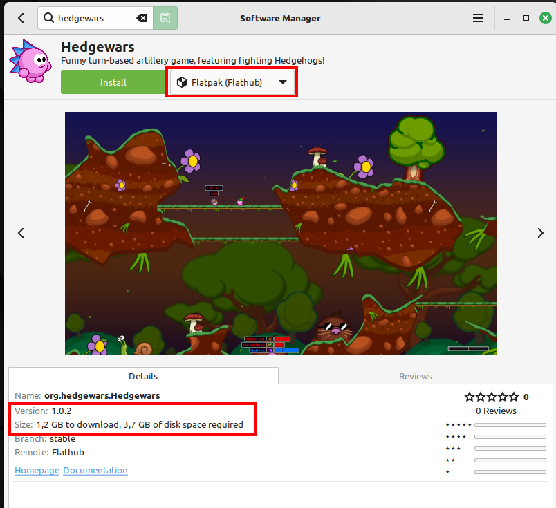
Kaip System Package ši programa užima 194 MB vietos tavo kompiuteryje, o kaip Flatpak - 3.7 GB. 3.7 GB atitinka 3700 MB. Taigi beveik 20 kartų daugiau vietos. Tai reiškia, kad Flatpak programai reikia daugiau vietos, nes ji atsisiunčia viską, ko jai reikia.
Gera žinia yra ta, kad kai instaliuosi kitą programą su Flatpak, labai tikėtina, kad kita programa jau galės naudotis kai kuriais dalykais iš pirmosios palapinės. Tada naujai programai reikės mažiau vietos.
Flatpak programas taip pat galima instaliuoti per Terminal programą.
Tačiau tai šiek tiek skiriasi:
- nereikia naudoti
sudo - vietoj
aptreikia naudotiflatpak - naudojame
install - programos pavadinimą galima pasiimti iš Software Manager, bet daugiau Flatpak programų galima rasti ir flathub.org tinklapyje.
5 Programų ištrynimas
Kaip ir programų įdiegimas, programų ištrynimas Linux yra gana paprastas. Tai galima padaryti keliais būdais. Šiame skyriuje išmoksi ištrinti programas per Software Manager bet ir per Menu. Taip pat atlikti abu veiksmus naudojant Terminal programą.
5.1 Software Manager
Pirmiausia pažiūrėkime, kaip ištrinti programas naudojant Software Manager.
- Atidaryk Software Manager.
- Paspaudus ant trijų brūkšnelių spausk ant “Show Installed Application” (lt. parodyk įdiegtas programas).
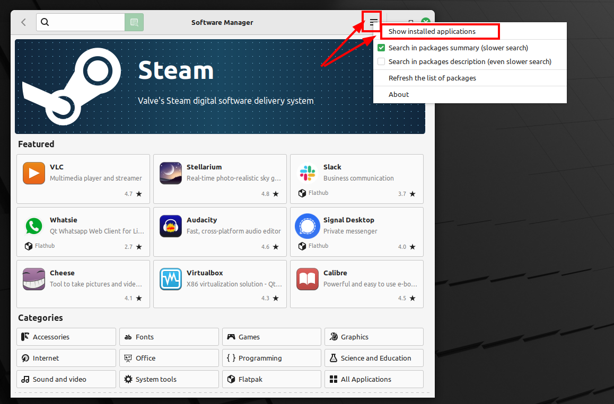
- Surask programą, kurią nori ištrinti, ir spausk ant jos pavadinimo ar piktogramos.
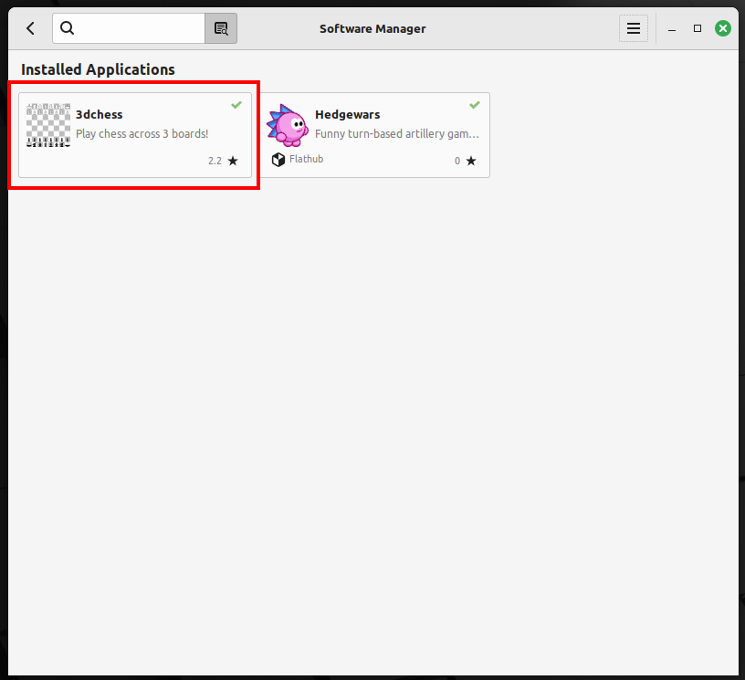
- Atsidariusiame lange spausk ant Remove (lt. pašalinti).
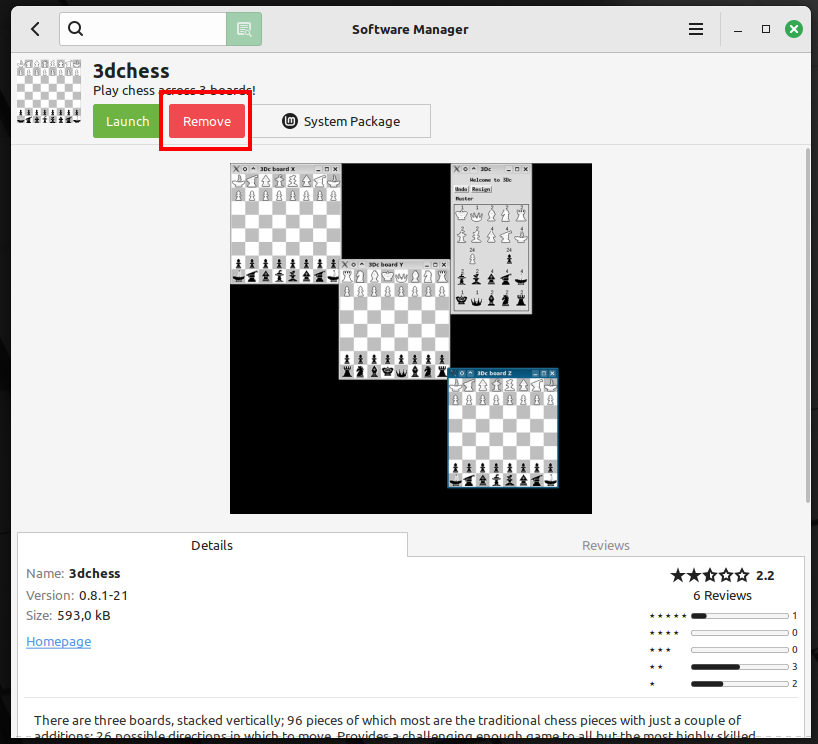
- Software Manager programa paprašys patvirtinimo. Spausk Continue, įvesk savo slaptažodį ir spausk Authenticate.
5.3 Terminalas
Programas taip pat galima ištrinti per terminalą.
5.3.1 Sisteminis paketas
Norėdami ištrinti sisteminį paketą, naudokime apt programą. Pavyzdžiui, jei nori ištrinti programą “3dchess”:
- Atidaryk terminalą.
- Įrašyk šią komandą:
sudo apt remove 3dchess
Paaiškinkime, kas čia yra kas:
sudo- pakelia tavo teises iki administratoriaus ir leidžia ištrinti programas.apt- programa, kuri įdiegia, atnaujina ir pašalina programas.remove- komanda, pasakanti apt, kad reikia ištrinti programą.3dchess- argumentas, pasakantis, kokią programą ištrinti.
Kompiuteris gali paprašyti patvirtinimo. Įrašyk Y ir spausk Enter.
5.4 Flatpak
Per Terminal irgi galime ištrinti Flatpak programą. Pavyzdžiui, jei nori ištrinti programą org.hedgewars.Hedgewars:
flatpak uninstall org.hedgewars.HedgewarsPaaiškinkime, kas čia yra kas:
flatpak- programa, kuri įdiegia, atnaujina ir pašalina Flatpak programas.uninstall- komanda, pasakanti flatpak, kad reikia ištrinti programą.org.hedgewars.Hedgewars- argumentas, pasakantis, kokią programą ištrinti.
Kompiuteris gali paprašyti patvirtinimo. Įrašyk Y ir spausk Enter.
5.5 Kodėl per Terminal?
Ko gero tau dabar kyla klausimas, kodėl verta mokėti atnaujinti, įdiegti ir ištrinti programas naudojant Terminal?
Naudoti Terminal gali atrodyti sudėtingiau nei spustelėti pelę, tačiau jis turi daug privalumų.
Terminal leidžia tau atlikti daugybę užduočių labai greitai. Užuot naršant per meniu ir ieškant reikiamų funkcijų, tu gali tiesiog įvesti kelias komandas ir tavo darbas bus atliktas.
Terminal suteikia daugiau galimybių ir lankstumo. Kai kuriuos dalykus gali padaryti tik per Terminal. Be to, Terminal naudoti gali būti smagu! Tai tarsi magija – tu rašai komandas, o kompiuteris jas vykdo.
Terminal naudojimas gali padėti tau geriau suprasti, kaip veikia tavo kompiuteris. Kai tu įrašai komandas ir matai, kaip jos veikia, tu pradedi suvokti, kas vyksta tavo kompiuterio viduje.
Terminal naudojimas gali padėti tau tapti tikru kompiuterių ekspertu. Ir kas žino, galbūt ateityje tave sudomins programavimo, duomenų analitikos ar tiesiog inžinerijos mokslai? Labai daug profesijų pradeda nautodi programavimą kasdieniuose savo darbuose. Aplinkosaugininkai gali tyrinėti kaip keičiasi klimatas ir kaip kinta gamta, buhalteriai gali paspasrtinti ataskaitų ruošimą, architektai apskaičiuoti kaip statyti namą, jog jis nesugriųtų vykstant žemės drebėjimui, robotikos specialistai - kaip sukonstruoti robotoą, kuris važinėja ir tyrinėja Marso planeta…
Skamba truputį sudėtingai, tiesa? Pateiksiu tau pavyzdį. Įsivaizduok, kad tu turi draugę vardu Pelenė. Pelenė irgi turi kompiuterį, bet nežino, kaip įdiegti programas. Tačiau jūs norite kartu žaisti tą patį žaidimą - lenktyniauti žaidžiant Super Tux Cart. Ką daryti?
Tu gali jai parašyti žinutę ir pasakyti, kad nukopijuotų ir paleistų štai tokį kodą:
sudo apt update && sudo apt full-upgrade -y && sudo apt autoremove -y && flatpak update && flatpak install net.supertuxkart.SuperTuxKart -y
Na štai, jeigu jūs turite paskyras Super Tux Cart, dabar galite nuotoliniu būdu lenktyniauti kartu.
Dar neturi paskyros ir elektroninio pašto adreso? Sekančioje pamokoje tai ir susikursime.
6 Žodynėlis
| Komanda | Apibrėžimas | Pavyzdys |
|---|---|---|
sudo apt update |
Komanda, kuri atnaujina paketų sąrašą iš visų saugyklų, kad būtų galima gauti informaciją apie naujausias programinės įrangos versijas. | Paleidus sudo apt update, sistema patikrina, ar yra naujų programinės įrangos paketų atnaujinimų. |
sudo apt full-upgrade |
Komanda, kuri atnaujina visus įdiegtus paketus į naujausias galimas versijas, automatiškai pašalindama arba įdiegdama paketus, kai reikia. | Naudojant sudo apt full-upgrade, jūsų sistema bus atnaujinta į naujausias programinės įrangos versijas. |
sudo autoremove |
Komanda, kuri pašalina nereikalingus paketus, kurie buvo įdiegti kaip priklausomybės, bet dabar nebėra reikalingi. | Paleidus sudo autoremove, bus pašalinti nereikalingi bibliotekų paketai, siekiant atlaisvinti vietos diske. |
flatpak update |
Komanda, kuri atnaujina visus įdiegtus Flatpak programas į naujausias versijas. | Naudojant flatpak update, jūsų Flatpak programos bus atnaujintos į naujausias versijas. |
sudo apt install <name> |
Komanda, kuri įdiegia nurodytą programinės įrangos paketą iš saugyklos. | Paleidus sudo apt install vim, bus įdiegta vim redaktoriaus programa. |
sudo apt remove <name> |
Komanda, kuri pašalina nurodytą programinės įrangos paketą iš sistemos. | Naudojant sudo apt remove vim, bus pašalinta vim redaktoriaus programa. |
flatpak install <name> |
Komanda, kuri įdiegia nurodytą Flatpak programą iš Flatpak saugyklos. | Paleidus flatpak install flathub org.gimp.GIMP, bus įdiegta GIMP programa. |
flatpak remove <name> |
Komanda, kuri pašalina nurodytą Flatpak programą iš sistemos. | Naudojant flatpak remove org.gimp.GIMP, bus pašalinta GIMP programa. |
-y |
Parametras, kuris automatiškai atsako “taip” į visus klausimus, kuriuos komanda gali užduoti, taip palengvinant automatizuotą diegimą ar pašalinimą. | Komandoje sudo apt install -y vim, parametras -y užtikrina, kad diegimo procesas vyks be vartotojo įsikišimo. |
&& |
Loginis operatorius, naudojamas sujungti kelias komandas taip, kad antroji komanda būtų vykdoma tik tuo atveju, jei pirmoji komanda baigiasi sėkmingai. | Komandoje sudo apt update && sudo apt upgrade, sudo apt upgrade bus vykdoma tik tada, jei sudo apt update sėkmingai baigiasi. |